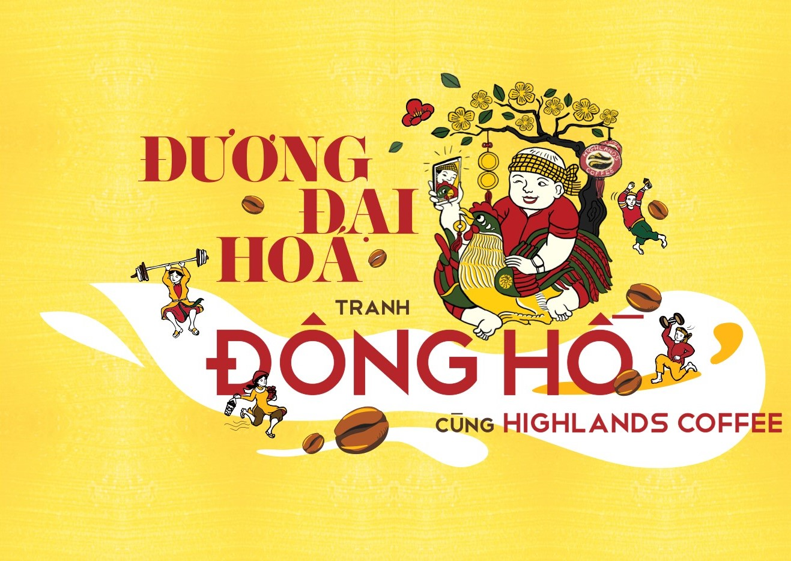
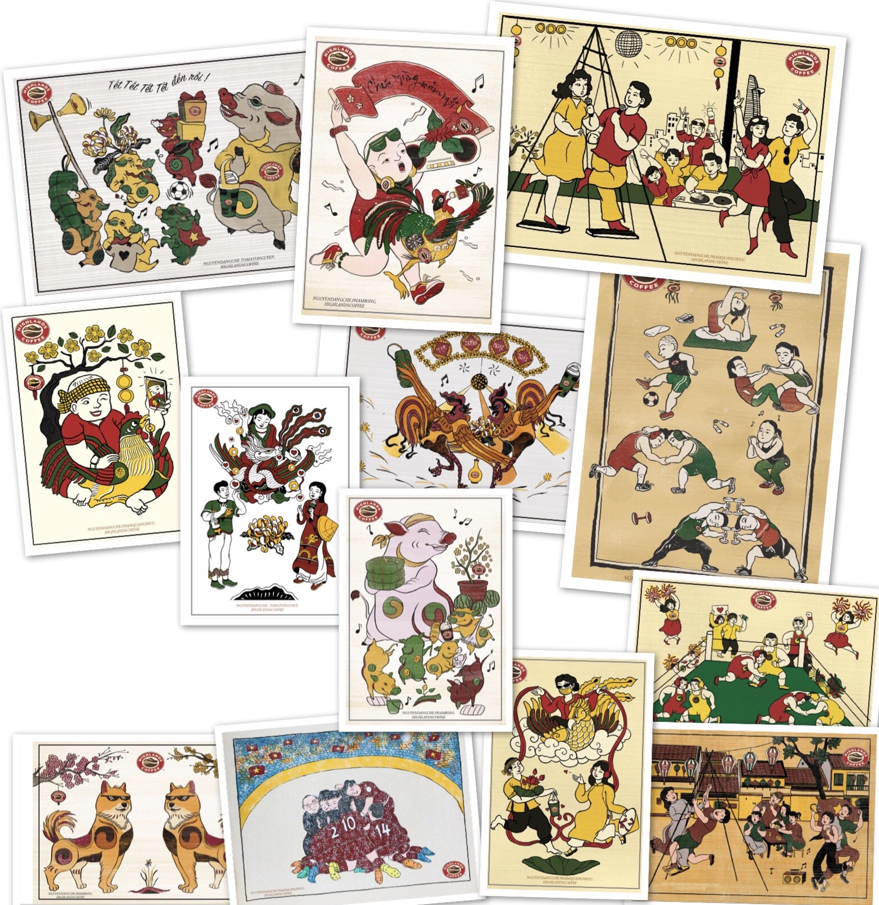

ĐƯƠNG ĐẠI HÓA TRANH ĐÔNG HỒ!
Thứ năm, 08/02/2018, 08:26 GMT +7
Nơi Nghệ nhân và Người trẻ cùng Highlands Coffee chúng tôi chung tay lưu giữ bản sắc Việt

Tranh Đông Hồ thể hiện sự gần gũi với đời sống sinh hoạt thường ngày của dân gian.
Và đặc biệt vào mỗi dịp Tết xưa, những bức tranh Đông Hồ Chúc Tụng mang màu sắc tươi
sáng được trang trí trong mỗi gia đình làm không khí ngày xuân thêm phần rực rỡ, ấm
cúng. Mang một tình yêu bất tận với nền văn hóa Việt Nam, chúng tôi mong muốn truyền
thống văn hóa nghệ thuật của đất nước được giữ gìn và phát triển. Bởi đó không chỉ
là bản sắc lịch sử của dân tộc mà còn là hiện thân của đất nước qua các thời đại.
Liên hệ với nghệ nhân Nguyễn Đăng Chế - một trong 2 nghệ nhân Đông Hồ duy nhất còn
lại của Việt Nam, Bác Chế đã cùng chúng tôi kết nối với nhiều hoạ sĩ trẻ và chia sẻ
những nỗi niềm, tâm nguyện của mình đến các bạn. Từ đó, truyền cảm hứng để các bạn
thổi hồn hơi thở người trẻ hiện đại vào nghệ thuật Đông Hồ. Bằng sự kết hợp sáng tạo
và sức sống hiện đại của tuổi trẻ vào nét nghệ thuật của truyền thống văn hóa dân
gian trên 13 bức tranh Đông Hồ Kinh Điển chúc tụng ngày Tết, một bộ tranh “ĐƯƠNG ĐẠI
HÓA TRANH ĐÔNG HỒ” đầy ý nghĩa – thể hiện các thông điệp chúc phúc cho một năm mới
tràn đầy “Sức khỏe – Thịnh vượng – Hạnh phúc” đã được trình làng đến giới trẻ. Bộ
tranh được thực hiện bởi 3 hoạ sĩ trẻ: Phạm Quang Phúc, Nguyễn Thị Phương Trinh và
Phạm Rồng. Hãy cùng Highlands Coffee chiêm ngưỡng 13 bức tranh đầy tâm huyết này và
khám phá ý nghĩa đằng sau mỗi bức tranh nhé!

*** Toàn bộ tác phẩm được trưng bày tại nhiều quán Highlands Coffee trên toàn quốc nhằm giúp giới trẻ được tiếp cận nền văn hóa Đông Hồ nhiều hơn.
Bên cạnh đó, chúng tôi tổ chức chương trình bán bộ tranh “Đương đại hóa Đông Hồ” được sản xuất hoàn toàn theo đúng qui trình, nguyên liệu của tranh Đông Hồ truyền thống do chính gia đình Nghệ nhân Nguyễn Đăng Chế sản xuất, và một phần số tiền bán tranh sẽ được trích ra để hỗ trợ cho làng tranh Đông Hồ.